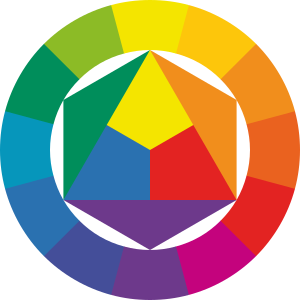
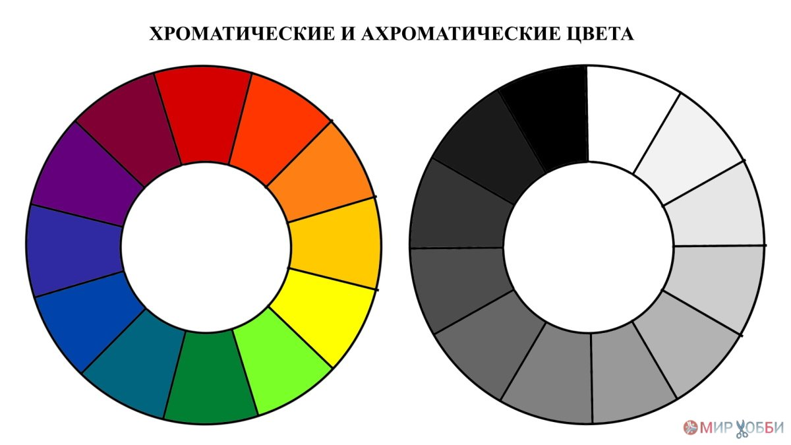
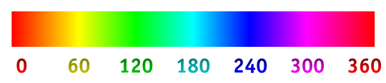
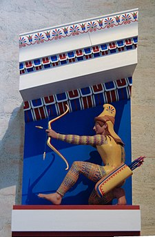
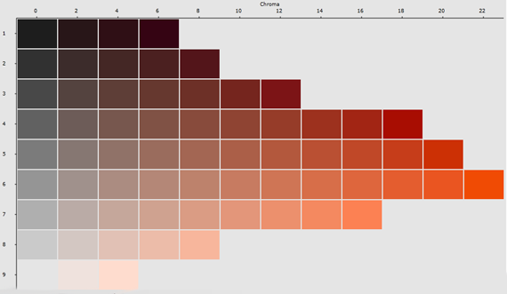
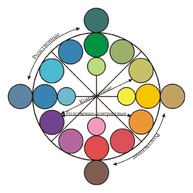

Излучаемый свет — это свет, который исходит из какого-либо активного источника: лампочки, экрана монитора, телевизора.
Отражаемый свет — это свет, который «отскакивает» от поверхности объекта, отражается от него.
Своеобразная таблица, которая показывает, как меняются и сочетаются цвета – это и есть цветовой круг Иттена простыми словами. Цветов может быть разное количество, но изначально их должно быть 12. Эту палитру придумал швейцарский талантливый художник Йоханнес Иттен.
Ахроматические цвета – диапазон оттенков от белого до черного цвета. К ним относятся: белый, черный и все оттенки чистого серого цвета.
Хроматические цвета – все остальные яркие, различимые цвета, которые и составляют цветовой круг.
Светлота́ (англ. lightness) — качественная характеристика тона, которая определяется способностью поверхности предмета отражать световые лучи. Чем выше такая способность и, соответственно, меньше поглощение света, тем выше светлотность.
Тон (англ. hue) — одна из трёх основных характеристик цвета наряду с насыщенностью и светлотой. В строгом колориметрическом смысле тон — это направление вектора цветности (вектора на диаграмме цветности с началом в точке белого и концом в данной цветности). Направление может быть задано углом (это и есть цветовой тон), в то время как удаленность от точки белого задается в процентах и называется насыщенностью (степенью смешивания наиболее насыщенных цветов — спектральных или крайних пурпурных с белым). Именно тон определяет название цвета, например «красный», «синий», «зелёный».
Полихромия (др.-греч. πολύς — многочисленный и χρῶμα — цвет) — многоцветная раскраска или многоцветность материала в архитектуре, скульптуре, декоративном искусстве. Достигается применением разноцветных материалов, патинированием, золочением или использованием красящих веществ[1]. Присутствовала почти во все эпохи и во всех областях культуры — в египетских пирамидах, минойских дворцах, в греческих и римских храмах, на исламских куполах и в средневековом искусстве. Противоположным понятием является монохромия.
Насыщенность(интенсивность) – это степень выраженности определенного цвета. Оно действует в переделе одного тона, где степень насыщенности определяется чистотой отражения определенного спектра от поверхности. Чем точнее и полнее идет отражении, тем более насыщенный оттенок мы видим. Если поверхность не идеально отражает одну волну, а имеется примесь, то такие оттенки обычно бледнее. Они могут быть сероватыми, коричневатыми, или с другим отливом, их можно характеризовать как пыльные, запотевшие, сложные, мягкие и пр. Насыщенные цвета можно характеризовать как яркие, броские, полные, выразительные, эффектные и т. д.
Понятие «насыщенность» так же связано с яркостью. Но если яркость — относительная величина: броским может быть и белый цвет, то насыщенность атрибут хроматического тона. Чистый тон, без примеси серого, с умеренным присутствием белого или черного — является эталоном данного понятия. В противоположность этому определению будет блеклость оттенка — чем выше загрязнение краски, тем сложнее полученный оттенок и ближе к сером. Бледность, бледность можно определить, как отсутствие яркости, однако мы так же понимаем, что это светлый, приглушенный (пастельный) тон или со значительной примесью серого.
Существуют четыре группы родственно-контрастных цветов: жёлто-красные и красно-синие; красно-синие и сине-зелёные; сине-зелёные и зелёно-жёлтые; зелёно-жёлтые и жёлто-красные. Эти сочетания достаточно активны.
